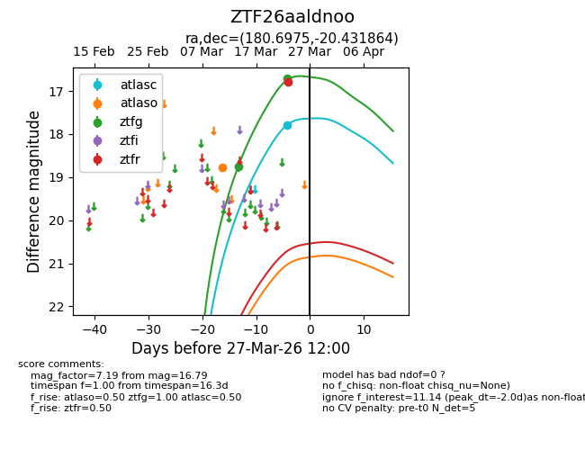
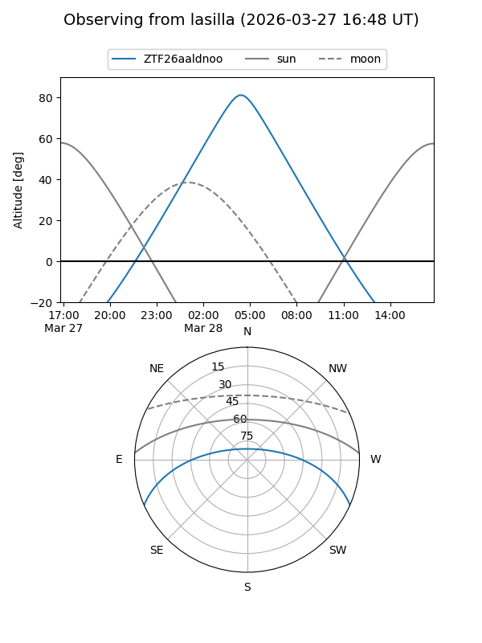
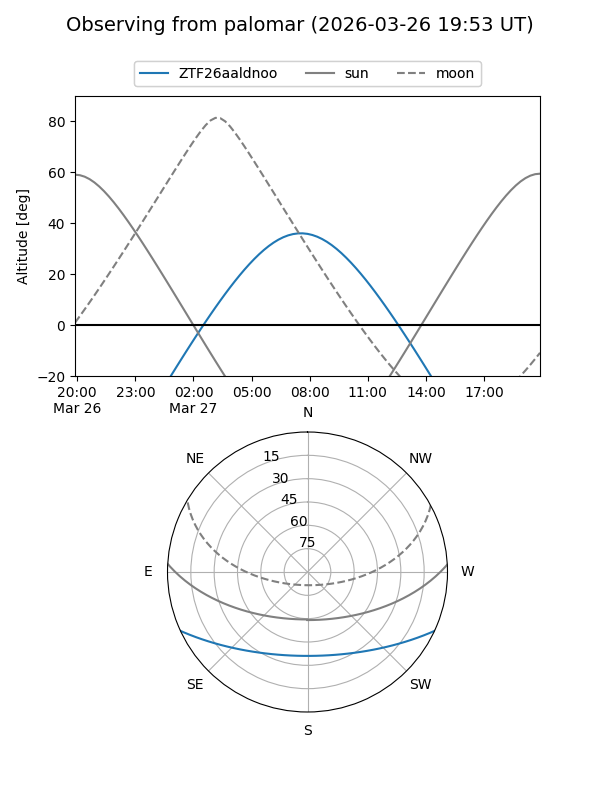
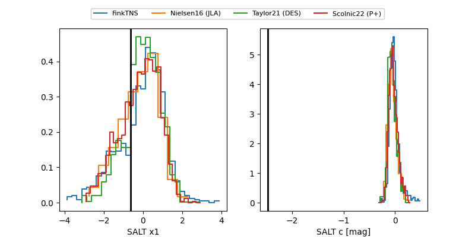

ZTF26aaldnoo
Target ZTF26aaldnoo at 2026-03-27 12:03
Aliases and brokers:
FINK: link
Lasair: link
ALeRCE: link
alt names
ZTF26aaldnoo (ztf,fink_ztf)
Coordinates:
equatorial (ra, dec) = 180.6975,-20.43186
equatorial (HMS+DMS) = 12:02:47.40,-20:25:54.71
galactic (l, b) = (287.7670,+41.00296)
Flags:
Photometry:
last atlasc=17.80, atlaso=18.77, ztfg=16.71, ztfr=16.79
1 atlasc, 1 atlaso, 2 ztfg, 1 ztfr detections
Lightcurve

Visibility


Additional plots
